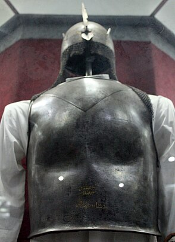
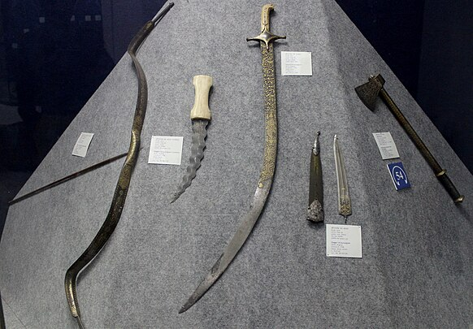
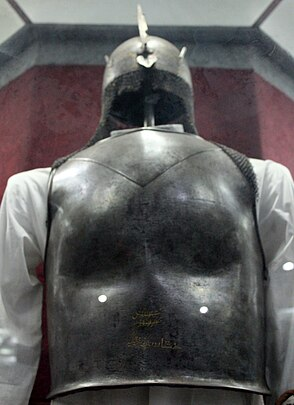
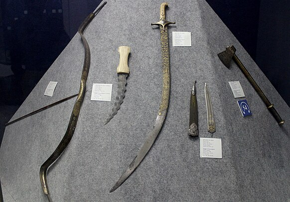
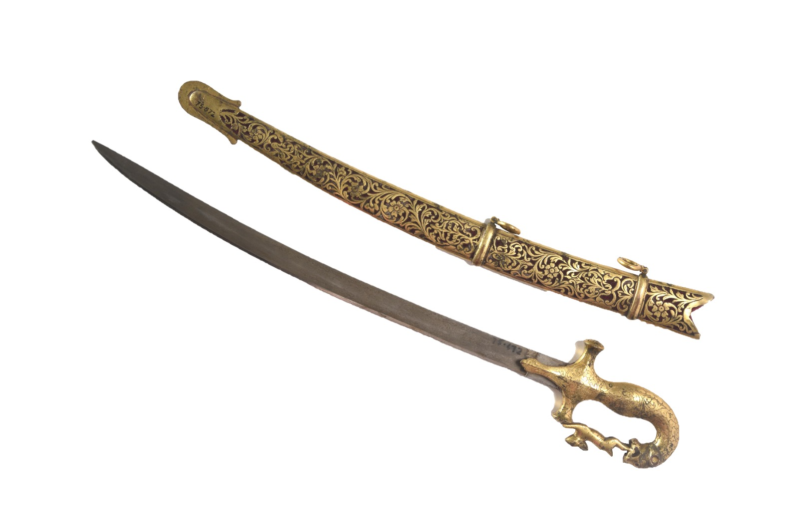
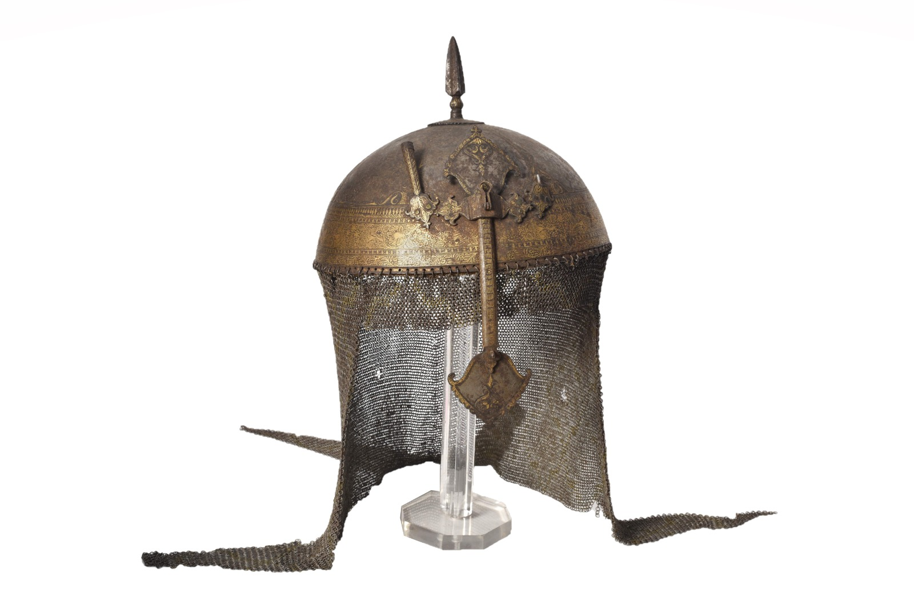
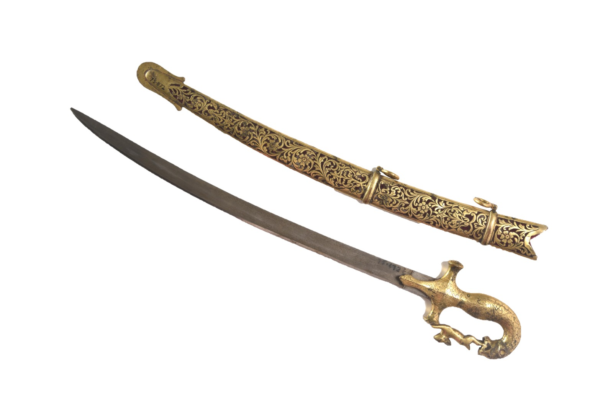
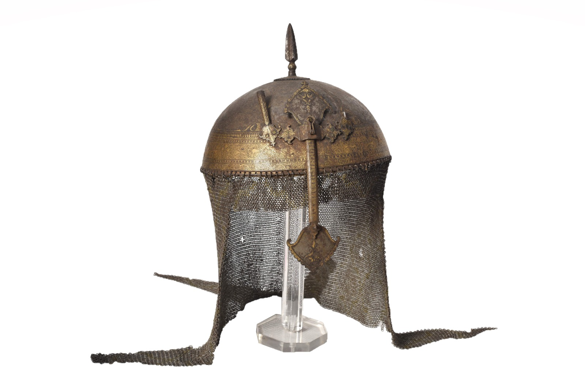

Arms and Armour
Stone
Stone tools from prehistoric periods, such as hand axes, scrapers, and other implements used by early humans.Carvings and sculptures made from different types of stones, including sandstone, granite, and marble.
Stone tools from prehistoric periods, such as hand axes, scrapers, and other implements used by early humans.Carvings and sculptures made from different types of stones, including sandstone, granite, and marble.
The Shield of Maharana Sangram Singh is an important artifact that reflects the valor and martial traditions of the Rajputs, particularly from the Mewar region of India.
Covering the chest and back, these are often made from metal plates or chainmail.Armor reflects the technological and tactical developments in warfare. Different designs and materials were used depending on the era, region, and type of combat.
Bows and arrows were critical in warfare, used for hunting and as weapons in battles.Bows and arrows are also significant in cultural and ceremonial contexts. Many indigenous cultures have traditional archery practices and legends related to archery.
The "Battle Axe of Nadir Shah" refers to a specific historical weapon associated with Nadir Shah, the 18th-century Persian ruler known for his military conquests.
The Sword holds a significant place in the history and culture of India, particularly in the context of the Rajputs, Mughals, Marathas, and other warrior clans.
Helmets were made from materials such as bronze, iron, steel, and sometimes leather. In earlier periods, bronze was the primary material, evolving to iron and steel in later times for better protection.
Gunpowder was invented in China during the Tang dynasty (9th century) and was initially used for fireworks and signal flares.

 



 


